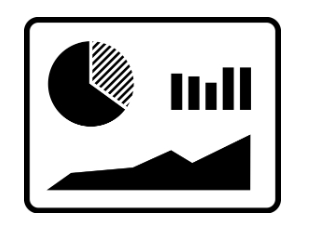
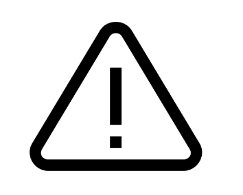

Bienvenido Serenazgo Dispatcher!
¿Cuál es la función del serenazgo?
Estás a cargo de la seguridad en el distrito.Explora y resuelve las incidencias generadas por los vecinos y coordinadores, y visualiza gráficas con las estadísticas de ellas. Monitorea y restringe el registro de incidencias. ¡Únete a nosotros y ayúdanos a tener una comunidad más segura!
A continuación, podrás visualizar las funciones a realizar como Serenazgo Dispatcher.
Pase el mouse por las siguientes imágenes para más información.

Podrás visualizar el dashboard de incidencias, en el cual podrás visualizar distintas gráficas de las incidencias mediante filtros por mes, tipo, etc.
Haga click en "Dashboard de incidencias" para dirigirse automáticamente a las listas.
Haga click en "Dashboard de incidencias" para dirigirse automáticamente a las listas.
Incidencias

Podrás visualizar la lista de incidencias para controlar los inconvenientes que registren los vecinos sanmiguelinos en la plataforma.
Haga click en "Lista de Incidencias" para dirigirse automáticamente a la lista.
Haga click en "Lista de Incidencias" para dirigirse automáticamente a la lista.
Incidencias
Podrás visualizar las descripciones de incidencias pasadas que ya fueron resueltas, por lo que en el caso de tener una incidencia similar, tendrás una referencia de solución.
Haga click en "Descripciones Pasadas" para dirigirse automáticamente a la lista.
Haga click en "Descripciones Pasadas" para dirigirse automáticamente a la lista.
pasadas